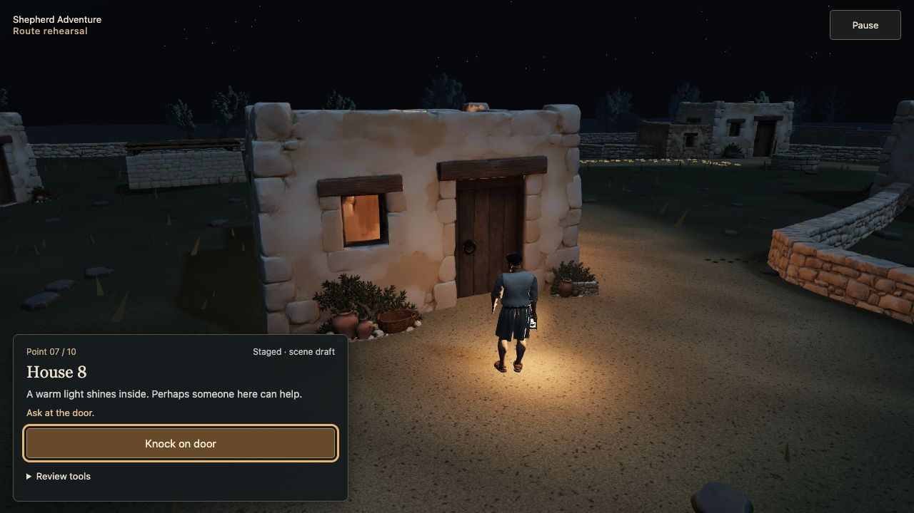
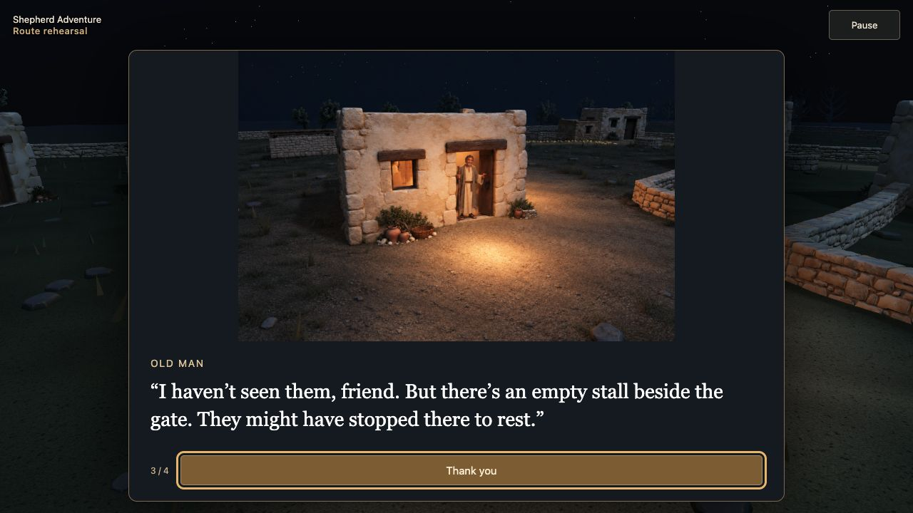

First · M0–M4
One continuous night journey
Coherent houses, matching loaders, continuous sound, believable companions and reliable movement.
Priority agreed: a comfortable experience on lower-powered devices.
First, address the playtest feedback. Then, bring the experience to more people through language choice and voices. The basic instruction/UI slice is accepted; the remaining work is tracked below.
Coherent houses, matching loaders, continuous sound, believable companions and reliable movement.
Priority agreed: a comfortable experience on lower-powered devices.
Choose a language on the starting screen. Read and hear the story in that language, using reviewed translations and generated voices.
Begins after the initial feedback programme.
Showing the complete roadmap. Accepted scope is marked explicitly; remaining priorities and experiments stay open.
Current behavior, not a proposed rewrite. Review approach → refusal → departure together. House copy/timing and voice reliability are still open.
Arrive from the workbench. Dark house, closed door.
“The house is dark. Perhaps someone inside can help.”
Knock on doorOne click starts the sequence. No further clicks during the response.
Does the action tell enough of the story without explaining every visible change? Is the refusal audible and readable?
| ID / after click | Current text and visible action |
|---|---|
| H01-B1 · 0–1.9s | “You knock on the wooden door.” Three knocks at 0.85, 1.2 and 1.55s. |
| H01-B2 · 1.9s | “You wait at the closed door.” |
| H01-B3 · 2.5s | Light comes on. “A light comes on inside the house.” |
| H01-B4 · 3.3s | Intended voice and subtitle: From inside: “Go away! It is late!” Door stays closed. Voice reliability is not yet fixed. |
| H01-C1 · 5.9s | Light goes out. “The light goes out. The door stays closed.” |
| H01-C2 · 6.7s | “Let’s try next door. There’s a light in the neighbour’s house.” Try next door → walk to House 3. |
Pausing stops this clock. Departure waits for a click. Review the whole encounter, using the three subsections to pinpoint feedback.
Play House 1 approach and interaction (staged rehearsal) · Normal player experience
Peaceful music currently cuts to silent running. Fade into footsteps and night ambience, including through a real loading wait.
Listen to both immediate and delayed story→3D entry. No abrupt silence, overlapping voices or startling effects; readable text still works with sound off. A continuous exploration score is optional.
Scripture stays complete and text-focused. Thoughts and house dialogue become short, situated blurbs.
House 8 is the example. Its illustrated house shrinks and the shepherd disappears; review every house for clear story flow.
Matched arrival/conversation/return captures plus normal-speed review. The player knows where they are, who is speaking and why the door changes state. Keep refusal and unanswered-house beats distinct.
Both M1 and M4 Macs freeze. Investigate engine/resource handling and camera logic before deciding on a fix.
Same-route traces identify the cause and demonstrate improvement. Validate a full journey on a chosen lower-end physical device. Exact browser versions are metadata, not the starting theory.
The two companions branch to House 2 while the player prepares the lantern, then appear in later background glimpses.
Audit the “AI quality” reaction as concrete examples: generated-looking dioramas, low-quality 3D models, and uneven staging.
Fix the tight well turns and the gate interaction that reads as flying backward instead of a small grounded step.
Replace the plain 2D feel and instant swaps with matching night atmosphere and deliberate entry/exit transitions.
Warm, cold, slow and failed preparation all retain continuity. Fewer loaders must fit lower-end memory and startup budgets. No invented progress, minimum wait or costly 3D scene just to display loading.
Actual House 8 baseline captures at the same image scale. These show the current problem, not a redesigned scene.


Tighter matching crop + a captured shepherd-back/lantern overlay. Check scale, shadows, occlusion and mobile framing.
A deliberate first-person camera move into matching art. Make the avatar's disappearance read as a viewpoint change.
Compare these in House 8, then select a handoff and review all five houses. Neither alternative is implemented or selected yet.
Reported now: peaceful music → abrupt louder cue/cut → plain 2D loader → silent running. Proposed experience:
Compare one initial foreground load, selective preparation during play, and a contextual wait only when late. Decide using startup time, transferred data, frame pacing and peak memory on a modest device. Fewer interruptions is the aim; loading everything upfront is not yet the decision.
After the initial feedback programme. Reuse the improved audio and loading systems; keep text available when voices are off or unavailable.
Scripture references stay exact. Voices follow the selected text and speaker. Previous/next, pause, replay and scene exit stop or replace the correct line; house exchanges remain forward-only.
Longer translations and right-to-left scripts get appropriate layout when included. Missing voice falls back to the same language's readable text.
These are next-milestone inputs. They do not block the feedback work.
No need to answer these abstractly now: compare examples, listen and measure.
| Feedback | Work |
|---|---|
| F01 · Abrupt music stop | I01 audio + I08 transitions |
| F02 · Silent gameplay | I01 footsteps and ambience |
| F03 · Too much thought/dialogue text | T01 + I02 blurbs |
| F04 · Text pulls attention away | I02 gameplay placement |
| F05 · House slide/text timing | T03 + I03 all-house flow |
| F06 · Shepherd disappears, house shrinks | I03 matching handoff |
| F07 · House 1 voice missing | I01 voice diagnosis |
| F08 · Random recovered freezes | I04 independent investigation |
| F09 · Loading style and abrupt swaps | I08 presentation + I04 budgets |
| F10 · Reading/image timing | I02 + I03 distinct story/house behavior |
| F11 · Previous/next review | I02 scripture only |
| F12 · Effect volume balance | T04 + I01 mix |
| F13 · Arrows instead of next | T02 appropriate forward affordances |
| F14 · Unexplained companion absence | I05 background search |
| F15 · Generated-looking art, poor models | I06 targeted consistency audit |
| F16 · Exact scripture addresses | T06 references |
| F17 · Well and tight camera turns | I07 motion choreography |
| F18 · Backward flight at gate | I07 grounded step |
Added product requirements: R01 lower-powered devices first; R02 multilingual content and voices in M5.
Updated after user acceptance (D023) · basic instruction/UI slice and T06 accepted; house interactions and remaining M2 work stay open.
Throwaway visual companion · Full roadmap and decision log · Repeatable workflow · Annotated evidence